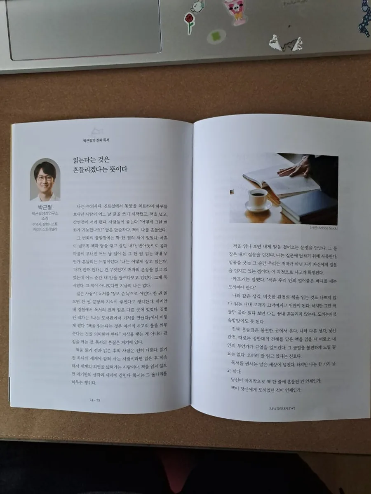
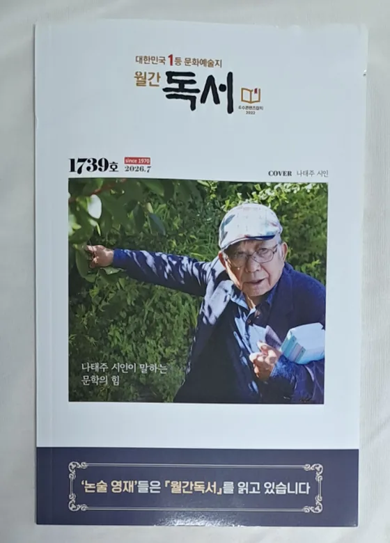

진로와 독서를 각각 하는 사람은 많습니다.
둘을 한 시간에 하는 사람은 드뭅니다.
전국 초·중·고 38개교에서 진로 특강을 했고, 독서 전문지 두 곳에 독서 칼럼을 연재하고 있습니다. 학교가 진로와 독서를 한 자리에서 다루려 할 때, 두 사람을 부르지 않아도 됩니다.
2027년, 학교에 「진로독서」가 들어옵니다
교육부가 2026년 7월 2일 발표한 「학교 독서교육 활성화 방안」의 내용입니다.
출처: 교육부 「학교 독서교육 활성화 방안」(2026.7.2 발표) · 보도 1 · 보도 2 · 보도 3(학년별 세부)
왜 이 사람인가
진로 강사도 많고 독서 강사도 많습니다. 겹치는 자리에 서 있는 경우가 드뭅니다.
진로 — 38개교
전국 초·중·고 38개교에서 진로 특강을 진행했습니다. 2·3학년 550명 대강당부터 3학년 137명 학년 단위까지 진행했습니다. 진로 특강 보기 →
독서 — 전문지 두 곳
독서신문 오피니언 섹션에 「박근필의 진짜 독서」 고정 코너를 쓰고, 한국독서교육신문에 「박근필의 진짜 독서법」을 21편째 연재하고 있습니다. 칼럼 아카이브 →
직업을 사람으로 읽는 관점
직업을 이름이 아니라 그 일을 살아가는 사람의 이야기로 읽습니다. 이 관점을 「직업인문학」이라 부르며, 인터뷰 프로그램으로 직업인 60여 명을 만나며 다듬었습니다. 진로독서는 이 관점을 책(독서)에 적용한 것입니다. 직업인문학이란 →
이미 학교에서 해 봤습니다
정책이 나오기 전부터 진로와 독서를 붙여 온 자리들입니다.
| 2025.12 | 인천 계양중학교 — 중학교 3학년 170여 명 대상 「진로 + 독서·글쓰기」 특강. 두 주제를 한 강연에서 다뤘습니다. |
| 2026.7 | 윤중중학교(서울) — 3학년 137명, 100분. 구로도서관 「진로동행, 꿈을 잇는 만남」 연계 프로그램이었고, 연계 도서는 저서 『방구석에서 혼자 읽는 직업 토크쇼』였습니다. |
| 2026.6 | 부산영상예술고등학교 — 전교생 414명, 90분. 영도도서관 연계 진로 특강. |
| 2026.8~ | 혁신어울림 작은도서관 — 초등 4~6학년 15명, 회당 90분 4회 「문해력·글쓰기·독서」 진행 중. 첫 수업 이틀 뒤 도서관이 하반기 6회 과정을 먼저 제안해 재섭외로 이어졌습니다. |
※ 학교 밖에서 교실로 들어가는 형태는 위 두 건(윤중중·부산영상예술고)에서 실제로 진행했습니다. 정부가 고1에 지원하겠다는 「찾아가는 독서·인문교육」이 같은 구조입니다.
학년별로 제공 가능한 구성
정부가 지정한 집중학년에 맞춰 정리했습니다. 학년과 인원에 따라 다시 구성해 드립니다.
| 대상 | 주로 다루는 것 | 형태 |
|---|---|---|
| 초등 3~6학년 | 왜 읽는가를 먼저 묻기 · 읽은 것을 자기 말로 꺼내기 · 쓰는 즐거움 찾기 | 단발 60~90분 / 4~6회 과정 |
| 중학교 1학년 (자유학기) |
직업을 이름이 아니라 그 일을 살아가는 사람의 이야기로 읽기 · 관심 분야에서 책으로 건너가기 | 진로 콘서트 60~100분 또는 동아리 연속 과정 |
| 고등학교 1학년 (진로독서) |
관심 분야 책으로 진로를 좁혀 가는 법 · 읽은 것을 기록으로 남기는 법 · 진로가 바뀌어도 남는 것 | 단발 90~120분 또는 학교–도서관 연계 |
| 교사 대상 | 교사가 먼저 읽고 쓰는 사람으로 서는 법. 부산시교육청영재교육진흥원 교원 직무연수(「AI 시대, 우리 아이에게 정말 필요한 것」 90분 원격연수, 2026.7~8 송출 완료)를 맡은 경험을 바탕으로 구성합니다. | 직무연수 · 원격연수 |


※ 대상·인원·희망 날짜만 알려 주시면 구성안을 보내 드립니다. 학교 예산 규모에 맞춰 협의합니다.
수업을 받은 학교에서 보내온 말
진로와 독서를 한 수업에서 다룬 뒤, 담당 선생님께서 직접 보내 주신 메시지입니다.
“아이들 오늘 독서, 글쓰기를 열심히 하는 아이들이 더 많이 생겼습니다.”
인천 계양중학교 · 담당 선생님 (3학년 170여 명 「진로 + 독서·글쓰기」 특강)
“오늘 수고 많으셨습니다. 뜻 깊은 강연 덕분에 오늘 글로벌멘토링프로그램이 더욱 빛이 날 수 있었습니다.”
부산 중구진로교육지원센터 · 담당자 (남성여자고등학교 글로벌 멘토링 콘서트 · 1·2학년 210여 명)
※ 담당 선생님께서 보내 주신 메시지를 옮긴 것이며 개인 실명은 밝히지 않았습니다.
가르치기 전에 썼습니다
진로독서를 가르치는 사람이면서, 진로독서 도서를 쓴 저자입니다.
읽히는 목적은 하나입니다 — 직장인에서 직업인으로, 한 우물을 깊게 파되 여러 우물도 같이, 그리고 평생 현역. 아이들에게도 이 셋을 그대로 말합니다.
| 『방구석에서 혼자 읽는 직업 토크쇼』 |
여러 직업을 밖에서 — 심리사·초등교사·놀이치료사·수의사 네 사람이 각자의 직업을 이름이 아니라 이야기로 풀어낸 청소년 진로서. 구로도서관이 진로 프로그램 「진로동행, 꿈을 잇는 만남」의 연계 도서로 지정했습니다(2026.7 윤중중학교). |
| 『할퀴고 물려도 나는 수의사니까』 |
한 직업을 안에서 — 수의사가 되는 법이 아니라 수의사로 사는 일을 쓴 책입니다. 좋았던 날과 그만두고 싶던 날이 함께 들어 있습니다. |
| 『알지 못하면 꿈꿀 수 없다 — 직업의 세계』 (가제 · 집필 중) |
여러 직업인을 만나서 — 「박근필의 피플인사이트」로 직업인 60여 명을 인터뷰한 기록이 바탕입니다. 2026년 하반기 출간 예정 |
| 독서신문 | 오피니언 섹션 「박근필의 진짜 독서」 고정 코너 — 6편 |
| 월간 『독서』 | 독서신문 온라인 연재분이 같은 발행사의 종이 월간지에 매월 함께 게재됩니다. 1970년 창간, 2026년 7월호가 1739호입니다. |
| 한국독서교육신문 | 「박근필의 진로독서」 — 22편 연재 중 |
| 진로 고정 코너 | 여섯 곳에 진로 코너를 연재 중입니다 — 교육플러스 「진로·직업 이렇게」(20편) · 뉴스앤잡 「박근필의 진로 특강」 · 이로운넷 「진로수업 10강」 · 더에듀 「내가 쓰는 진로」 · 학생과청소년 「박근필의 진로 클리닉」 · 경인미래교육신문 「박근필의 진로 수업」 |
| 문해력 주제 | 뉴스테이션 · 호남교육신문 · 한국강사신문 등에 문해력을 다룬 칼럼을 써 왔습니다. |
진로독서 목록을 추천하는 사람과 그 목록에 들어갈 책을 쓴 사람이 같습니다. 전체 칼럼은 칼럼 아카이브, 저서는 저서 페이지에 있습니다.
자주 묻는 질문
섭외를 검토하실 때 확인하시게 되는 것들을 정리했습니다.
진로 특강과 독서 강연을 따로 부르는 것과 무엇이 다른가요?
두 사람을 부르면 두 개의 수업이 되고, 한 사람이 하면 하나의 이야기가 됩니다. 진로 특강 38개교와 독서 전문지 두 곳 연재, 그리고 진로독서 도서 복수 출간 경력을 함께 가진 경우는 흔치 않습니다. 인천 계양중학교에서 중3 170여 명을 대상으로 진로와 독서·글쓰기를 한 강연에서 다룬 적이 있습니다.
도서관과 학교가 함께 진행하는 프로그램도 가능한가요?
진행한 적이 있습니다. 2026년 7월 윤중중학교 3학년 137명 진로 특강은 구로도서관 「진로동행, 꿈을 잇는 만남」과 연계했고, 연계 도서는 『방구석에서 혼자 읽는 직업 토크쇼』였습니다. 같은 해 6월 부산영상예술고등학교 강연은 영도도서관 연계였습니다.
어느 학년까지 가능한가요?
초등학교 1학년부터 성인까지 가능합니다. 학교는 2·3학년 550명 대강당 강연부터 15명 도서관 워크숍까지 규모를 달리해 왔고, 대학생·직장인 대상 강연도 진행합니다. 대상과 인원을 알려 주시면 그에 맞춰 구성합니다.
책을 읽고 오지 않은 학생이 있어도 되나요?
됩니다. 읽고 온 학생을 전제로 설계하지 않습니다. 왜 읽는가를 먼저 묻는 방식으로 진행하기 때문에, 읽지 않고 온 학생에게는 오히려 시작점이 됩니다.
한 번이 아니라 여러 회차로도 가능한가요?
가능합니다. 혁신어울림 작은도서관에서 초등 4~6학년 대상 4회 과정을 진행 중이고(2026년 8월 기준), 그 첫 수업 이틀 뒤 도서관이 하반기 6회 과정을 먼저 제안해 재섭외로 이어졌습니다.
왜 수의사가 진로독서를 이야기하나요?
진로를 다시 그려 본 사람이기 때문입니다. 수의사로 약 20년, 마흔에 번아웃을 겪고 병원을 정리했습니다. 그 자리에서 책을 읽고 글을 쓰기 시작해 저서 5권을 냈고, 지금도 동물병원과 강단에 함께 섭니다. 진로를 책으로 직접 다시 그려 본 사람의 이야기입니다.
섭외 문의
학년과 인원만 알려 주셔도 됩니다.